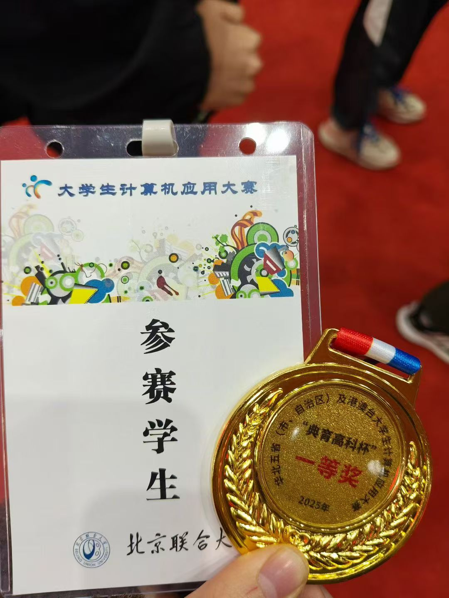
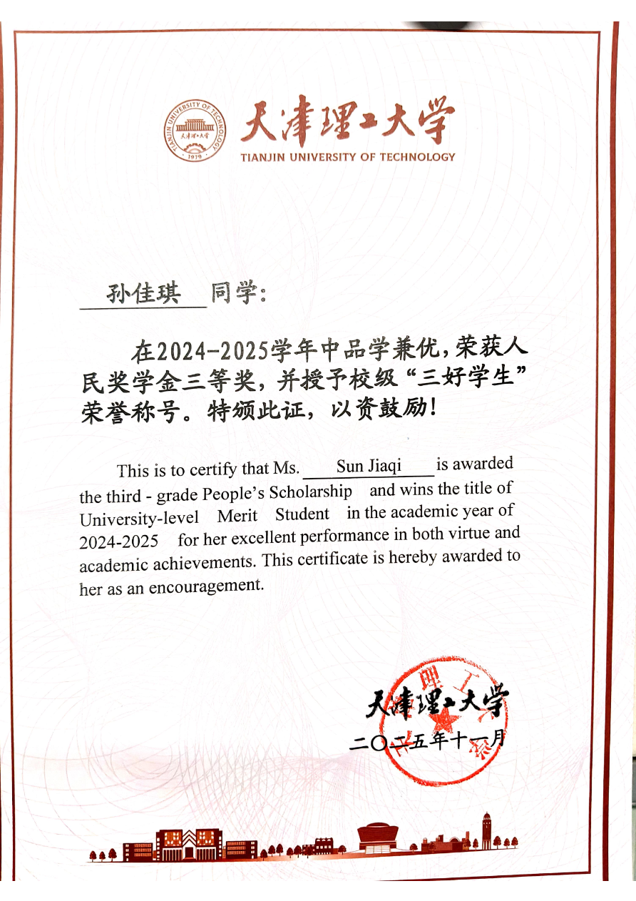
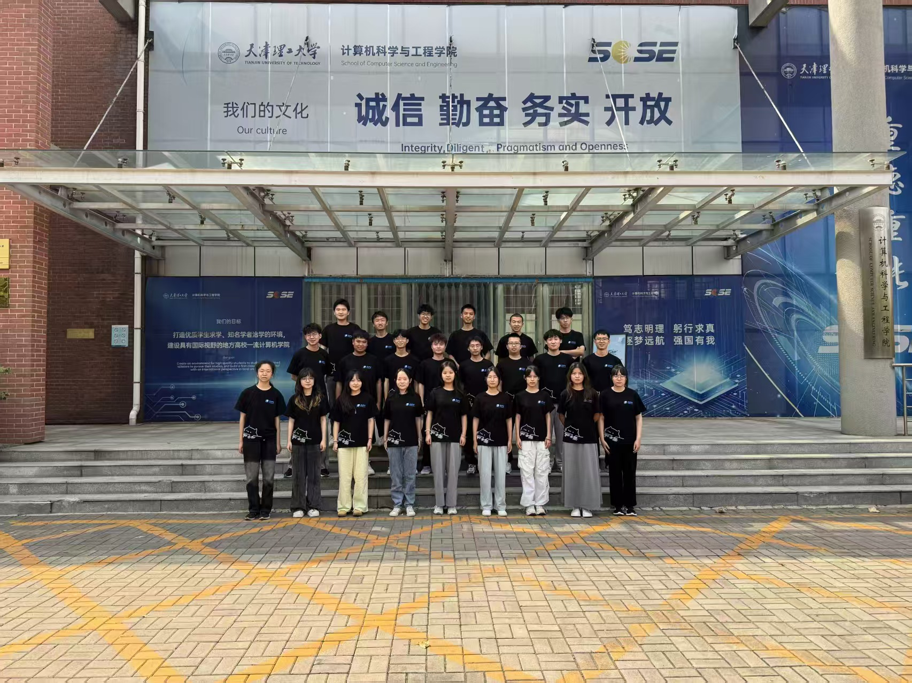

Awards
荣誉奖项

2025.10
国家级竞赛
华北五省计算机应用大赛 国赛一等奖
参加华北五省、市、自治区及港澳台大学生计算机应用大赛，凭借"学业导师助手数字化考核评价系统"项目，从数百支队伍中脱颖而出，获得国家级一等奖。

2025.11
校级荣誉
天津市人民政府奖学金
综合学业成绩、科创竞赛与学生工作表现优异，获得天津市人民政府奖学金。已通过大学英语四级、六级考试，具备英文文档阅读与基础口语交流能力。
Campus Experience
校园经历

2025.07
社团经历
学生创新创业实践中心 · 产品组负责人
主导产品全流程管控，搭建标准化产品管理机制，统筹从需求调研、原型设计到测试上线、迭代优化的全链路；梳理跨岗位协作流程，优化协作模式；策划公益学术培训活动，搭建第二课堂学习体系，覆盖全校学生。

2024.09
学生工作
班级组生委员
统筹班级卫生管理与日常事务，建立规范管理机制，保障班级有序运转；策划组织班级团建活动，对接学院通知、协调同学需求，有效提升班级凝聚力，锻炼了沟通协调、活动策划与落地执行能力。